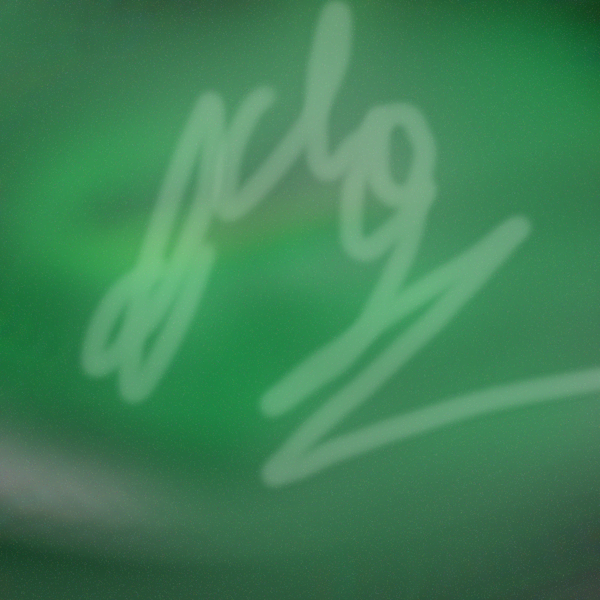

Music - one-eins-uno
lithium
First ever song I made. Just some chill beat. It sucks lol
procrastination
Ft. my friendos. Made this for a school project. Never uploaded it on YouTube btw! It's only here. Originally it was planned to have two parts. "Ah, we got time" and "Oh no, I gotta get this done". Never finished the latter, but it's okay, we still got an A lmao
Because of the second part missing, it only features the first part. Now it's just an uncanny aesthetic, kind of like "exploring a basement in a game" (quote by my music teacher).